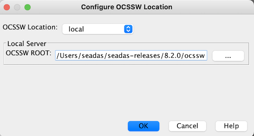

| Configure OCSSW Location |
Configures OCSSW location.
SeaDAS-Toolbox -> SeaDAS Processor Location
 |
OCSSW Location - this is the physical location of the OCSSW software which you intend to use when running from the SeaDAS GUI. The following additional parameters are needed dependent on the selection of the OCSSW Location parameter:
SeaDAS starts the container itself when docker is selected, at SeaDAS startup and whenever an OCSSW processor is run while the OCSSW server is not answering. It downloads the image the first time (this can take several minutes), creates both directories, copies your Earthdata Login file (~/.netrc, or _netrc on Windows) into the shared directory and starts the container, named seadas-ocssw. The container keeps running after SeaDAS exits. After the first start, install OCSSW with the OCSSW Manager.
To start the container without SeaDAS, run bin/start_ocssw_docker (Linux, macOS) or bin\start_ocssw_docker.ps1 (Windows) from the SeaDAS installation directory.
To have SeaDAS run a start script from another location, for example when running SeaDAS from a development build that has no bin/start_ocssw_docker, start SeaDAS with the Java option -Dseadas.ocssw.docker.script=<full path of the script>.
Note: this tool updates the configuration file: ~/.seadas9/etc/seadas.properties